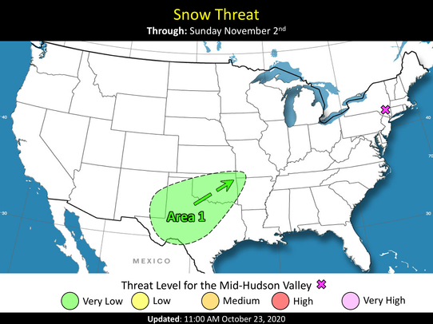
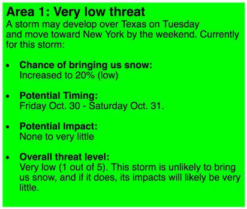
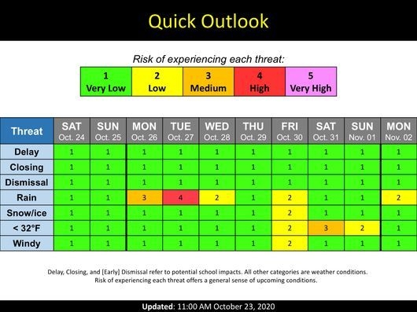
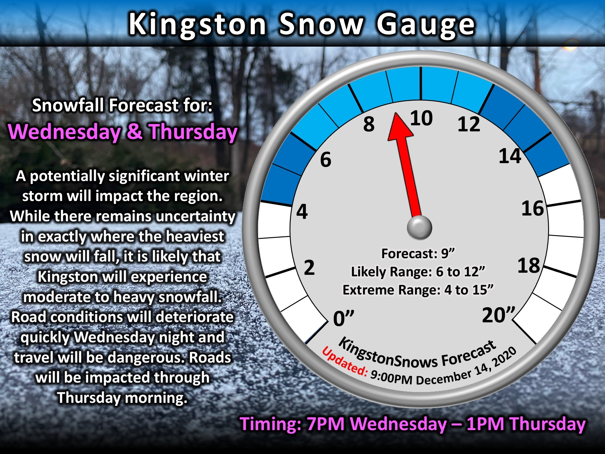

This page provides guidance on how to interpret some of the terms and graphics that
KingstonSnows uses. If there is anything that you are unsure how to interpret or use, please do not hesitate to message Ethan at
facebook.com/KingstonSnows or eburwell92@gmail.com. Questions are used to improve future communication.
How do I interpret the terms KingstonSnows uses?
Chance - the mathematical probability of an event occurring. Chance may be expressed as a number, such as 50%, or may be expressed
as a corresponding quality, such as a "low chance".
Impact - refers to how a particular event affects daily routines. For example, snow flurries have very little affect on most people's
daily routine (little impact); a blizzard will significantly affect everyone's daily routine (high impact).
Threat or Hazard - an event or weather condition that may affect daily routines.
Risk Level - a combination of chance and impact used to express how dangerous a future hazard will be. For example, blizzards are
high-impact events; however, if one blizzard has a 30% (low) chance of occurring while another blizzard has a 70% (high) chance of
occurring the threats they pose are not the same. While both will have high impacts if they occur, the 70% chance blizzard has a
higher probability of actually occurring, so it poses a greater level of risk.
How do I interpret the "Snow Risk" graphic?
The "Snow Risk" graphic is used to map the winter weather areas that KingstonSnows is currently monitoring. If any potential winter weather areas are currently being monitored, they will be indicated by a colored oval on the map labeled as "Area 1", "Area 2", "Area 3", etc depending on how many there are. This oval outlines the storm's current extent. An arrow beside the oval indicates the direction that the storm is expected to move once it forms. The color of the oval depicts the current risk level for the Mid-Hudson Valley, which is represented by the purple X. The threat level is a combination of the probability of the storm affecting us, and the impact that it would have if it did affect us. The "Snow Risk" graphic is intended to be used in conjunction with the info boxes located below them. These info boxes provide basic information about the areas being monitored:
Each area being monitored will have its own info box. The colors and risk levels in the info boxes and on the map are the same. Individuals with colorblindness can read the risk level for each area from the info boxes.
How do I interpret the "Quick Outlook" graphic?
The "Quick Outlook" graphic is used to display the chance of experiencing each hazard over the next several days. To use this graphic, locate the "threat" column on the left, and then select an element in that column (ex: rain, snow, windy). Then, move across the row to the right of the threat. The day/date at the top of the new column tells what timeframe the information is for. There are five chance levels on this graphic, ranging from "very low" to "very high". Each level corresponds to roughly to the numerical probability of experiencing the threat, that is, "very low" is less than 20%, "low" is about 20% to 40%, "Medium" is about 40% to 60%, "high" is about 60% to 80%, and "very high" is more than 80%. The numbers 1, 2, 3, 4, or 5 correspond to each color and chance level, and are to assist individuals with colorblindness in using the graphic.
How do I interpret the "Snow Gauge" graphic?
The "Snow Gauge" graphic is used to display both the amount of snow that is expected and the uncertainty in the snowfall forecast. The dark blue section of the gauge illustrates the "extreme range" of snowfall that may occur in either the snowiest scenario possible or the least snowy possible. At it's low end, the extreme range corresponds to roughly the amount of snow that there is a 90% chance of exceeding. At it's high end, the extreme range corresponds to roughly the amount of snow that there is a 10% chance of exceeding. The light blue section of the gauge illustrates the "likely range" of snowfall for the storm. At it's low end, the likely range" corresponds to the amount of snow that there is a 75% chance of exceeding, and at it's high end, the likely range corresponds to the amount of snow that there is a 25% chance of exceeding. The "forecast" value is the most likely total snowfall value for the storm.
KingstonSnows | Kingston, New York
Website built by Ethan Burwell